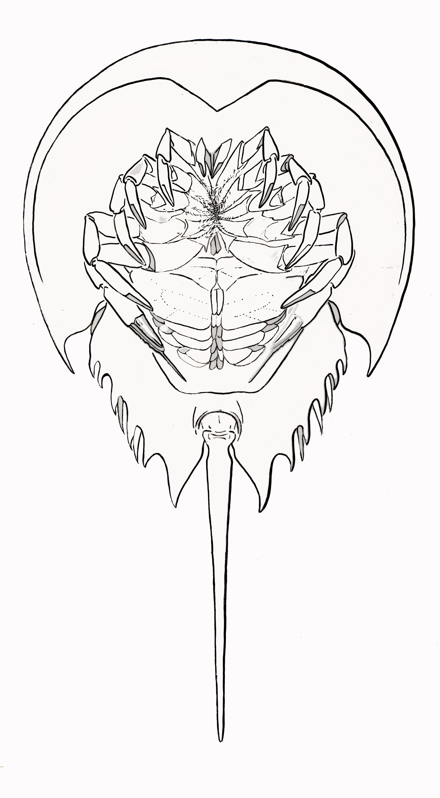

Horseshoe Crab Anatomy Diagram

Pusher Legs
Last pair of legs, used for locomotion and for digging in the sand.
Book Gills
Respiratory gas exchange, occasional swimming
Walking Legs
Regular leg pairs used in movement
Chelicerae
First pair of legs, used to place food in the mouth
Mouth
Uses gastric mill to grind and 'chew' the food into a goop more easily absorbed.